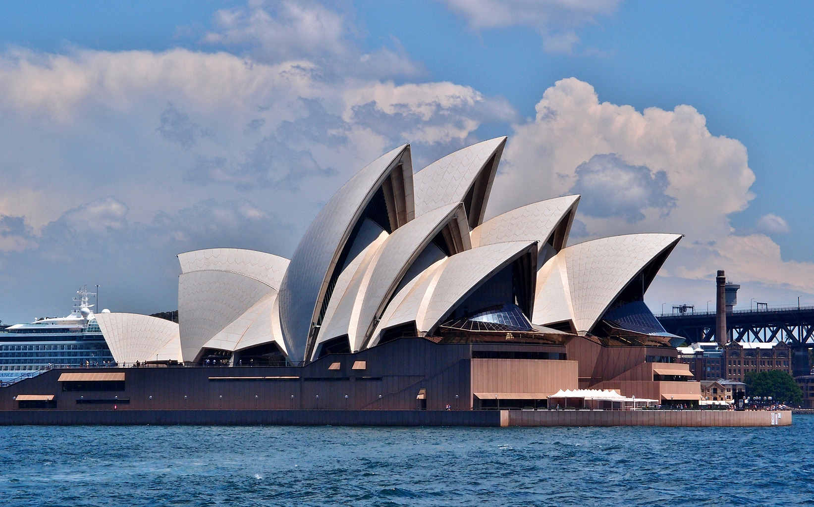

Austrália |
|
Austrália , é um país do hemisfério sul, localizado na Oceania, que compreende a menorárea continental do mundo, a ilha da Tasmânia e várias ilhas adjacentes nos oceanos Índicoe Pacífico. O continente-ilha, como a Austrália por vezes é chamada, é banhado pelo oceano Índico, ao sul, e a oeste pelomar de Timor, mar de Arafura e Estreito de Torres, a norte, e pelo mar de Coral e mar da Tasmânia, a leste. Através destes mares, tem fronteira marítima com a Indonésia, Timor-Leste e Papua-Nova Guiné, a norte, e com o territóriofrancês da Nova Caledónia, a leste, e a Nova Zelândia a sudeste.
 |